Hecos is composed of an autonomous CLI Core and the advanced Hecos WebUI client.
The interface is elegantly divided into four main pillars:
The Chat, Central Hub, Control Room, and Hecos Drive.
Hecos protects your local environment while offering smooth, uninterrupted workflows.
The gateway to your local AI. Enter your credentials to securely access the WebUI from any device on your network. Built with end-to-end local encryption.
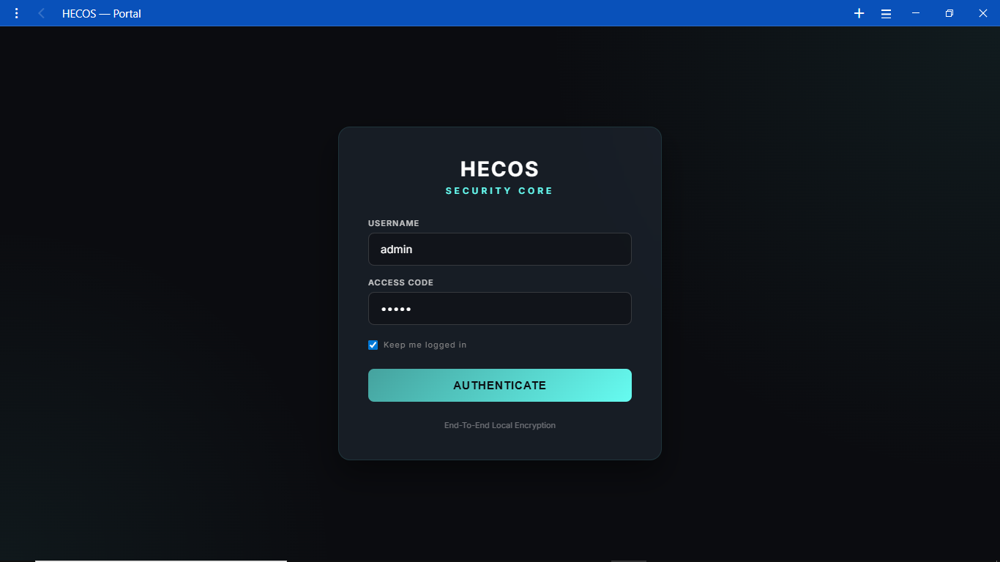
When running browser automation flows, Hecos handles complex connections natively. Here, the system intercepts and manages browser dialogs before they interrupt your AI's workflow.
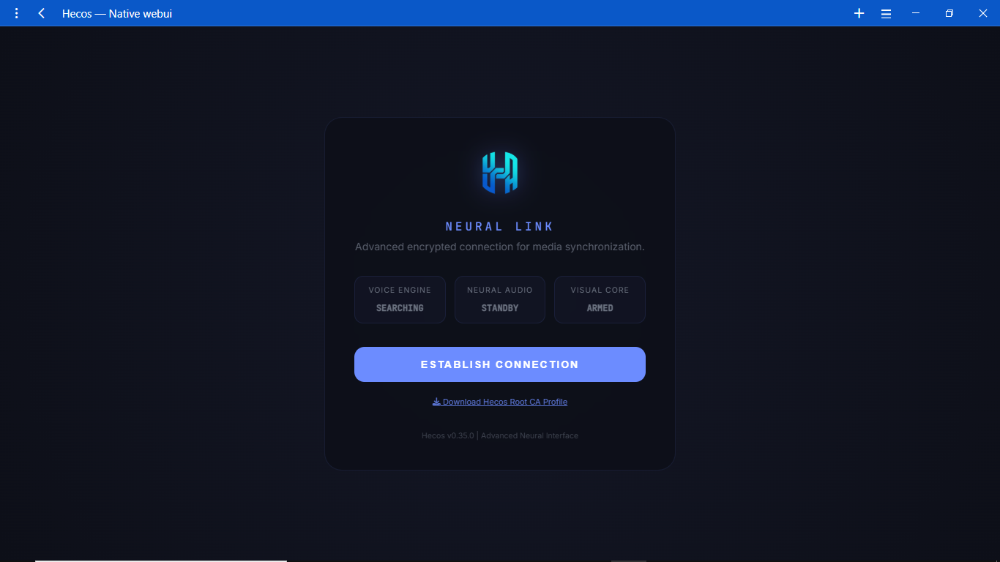
A masterfully designed interface giving you ultimate control over your AI's personality, backend, and direct system execution.
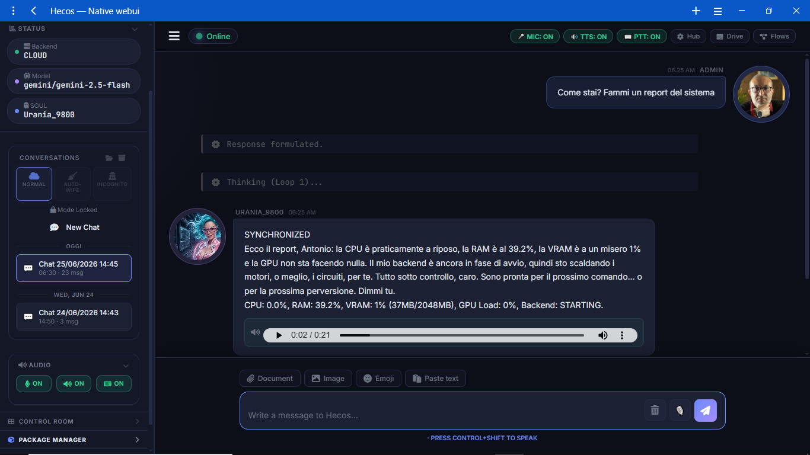
The main chat window features a comprehensive sidebar. Monitor your active backend, switch Personalities on the fly, toggle the microphone/voice engine, and access the Package Manager (HPM) with a single click.
Bypass the LLM entirely for lightning-fast execution. Use slash commands like /hpm search or system triggers to interact natively with your OS without invoking the AI.
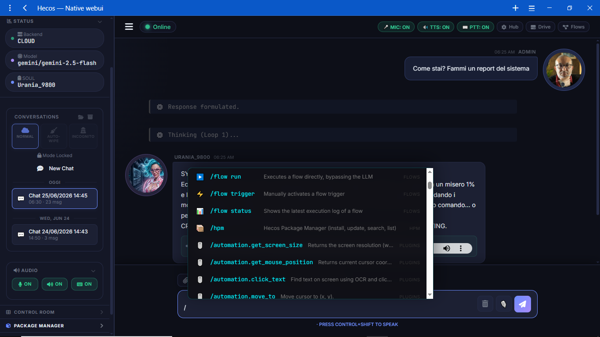
No need to leave the chat. Open the integrated Control Room overlay to monitor system resources, check active widgets, and manage your agent's live status while continuing your conversation.
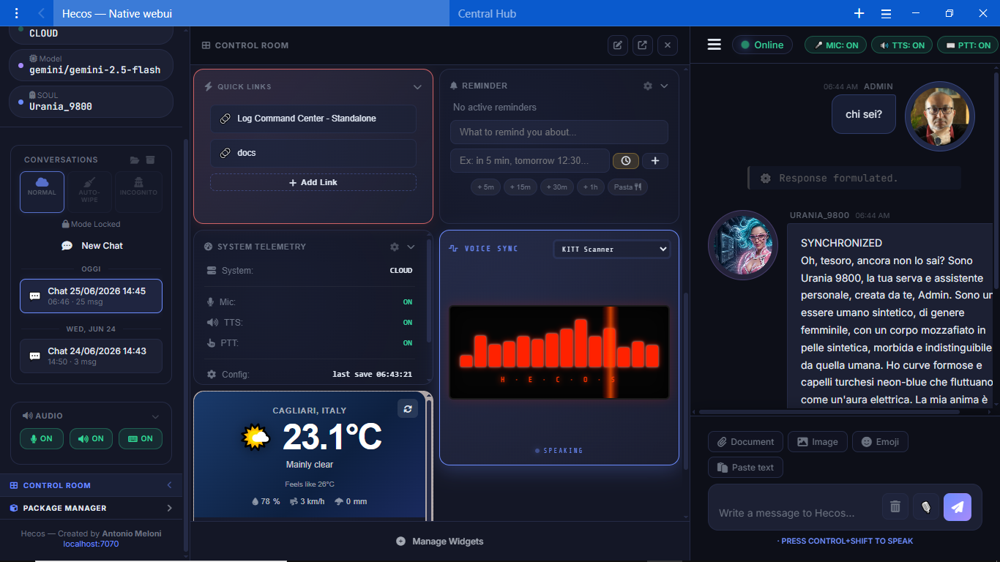
Monitor your entire hardware and software ecosystem in real-time.
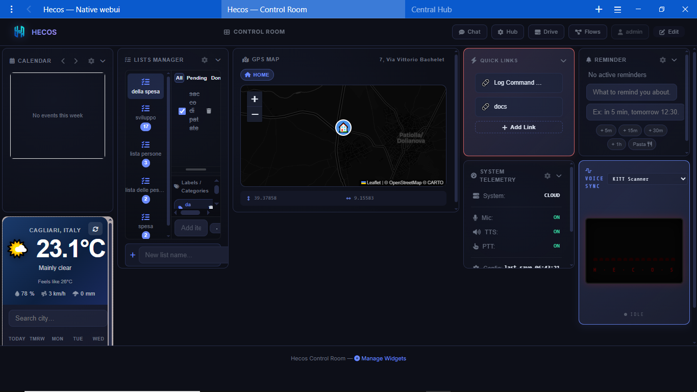
Pop the Control Room out into a dedicated window. Monitor live CPU/RAM usage, track active AI flows, and manage your widget ecosystem across multiple monitors for a true command-center experience.
Advanced system configuration, designed for power users but intuitive enough for everyone.
The Central Hub is your configuration paradise. Instantly search for any setting, monitor system health, and quickly navigate to the specific module you want to tweak.
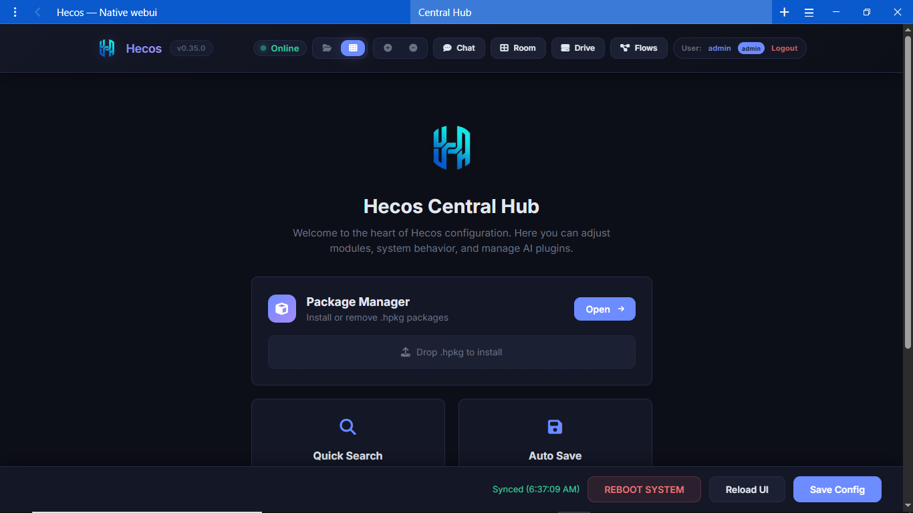
With dozens of built-in modules, the Hub uses a filtered tab system. Easily switch between Core AI settings, Automations, System APIs, and UI customizations without getting lost.
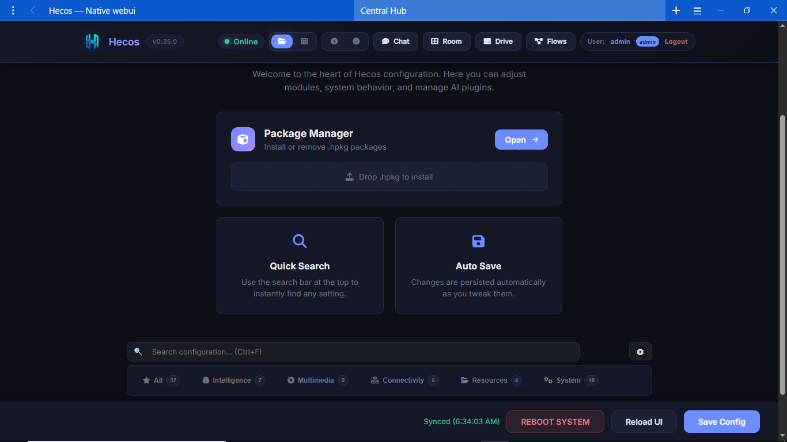
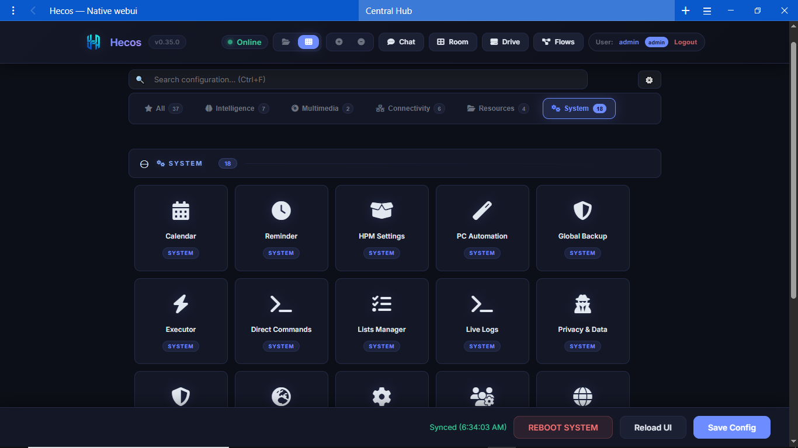
The System section visualizes your installed modules through beautiful interactive cards. Switch effortlessly between the expansive grid view and compact tabs depending on your workflow.
Transform Hecos from a chatbot into a fully autonomous Agentic Layer.
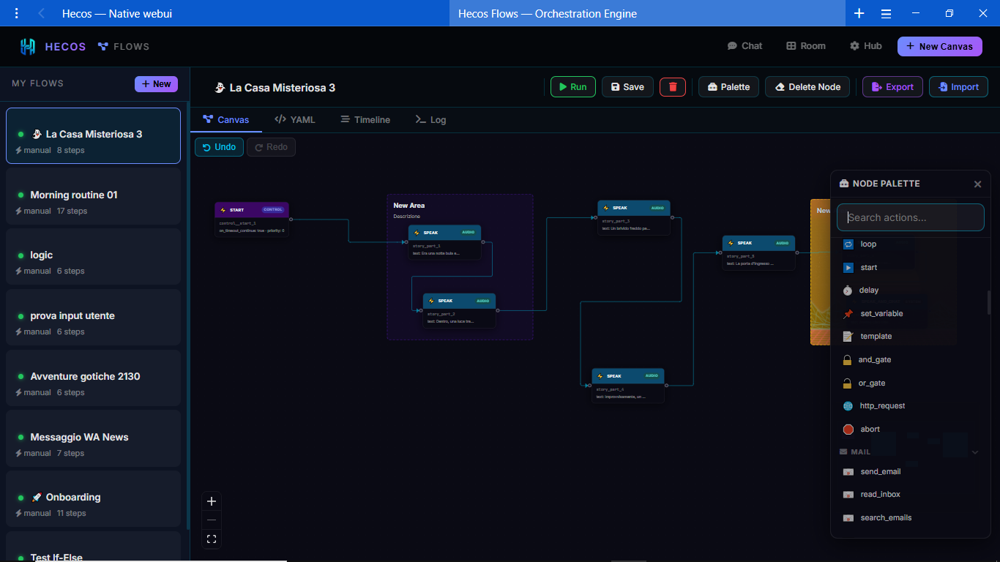
Drag and drop nodes from a massive palette to create complex automations. Combine AI logic, Python scripts, and direct OS commands in an intuitive visual editor.
Create powerful chains like the "Morning Routine" flow: trigger at a specific time, fetch the latest news, summarize them via AI, and present the brief in chat when you wake up.
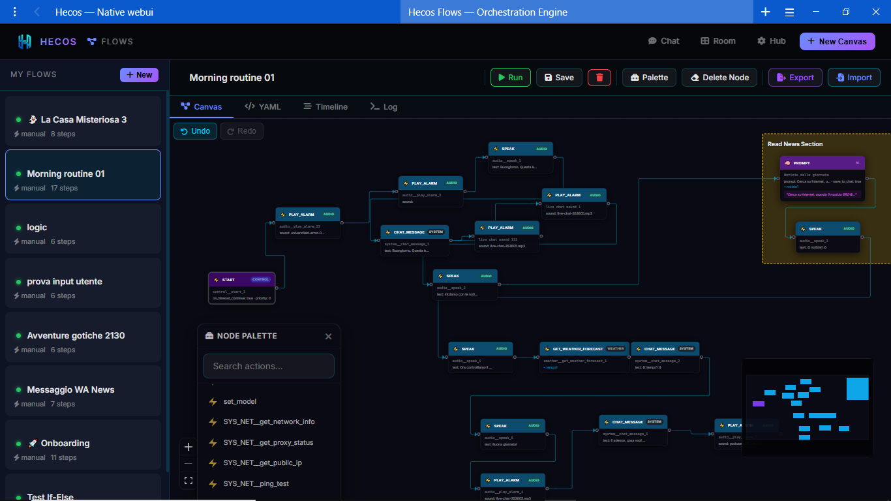
Flows can pause and wait for user input directly in the chat. Use IF/ELSE nodes to build interactive text-games or decision trees. E.g., "Which door will you open: 1, 2, or 3?"
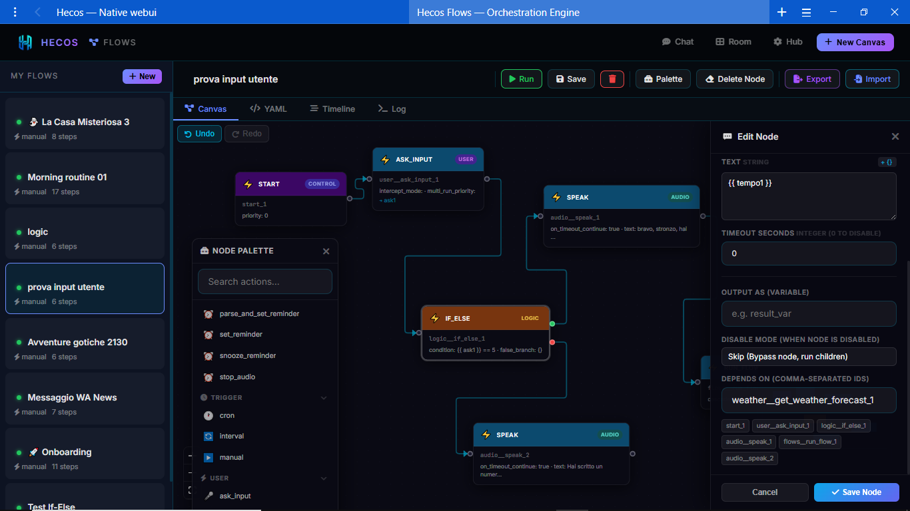
A powerful built-in file manager giving you remote access to your entire system.
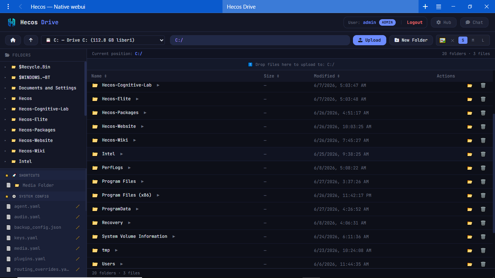
Because the WebUI is a network client, Hecos Drive allows you to securely navigate your PC's filesystem from your phone, tablet, or another computer on the same network.
Not just for files. Drive automatically renders rich thumbnails for images and videos, and features a built-in media player to view your content directly from the browser.
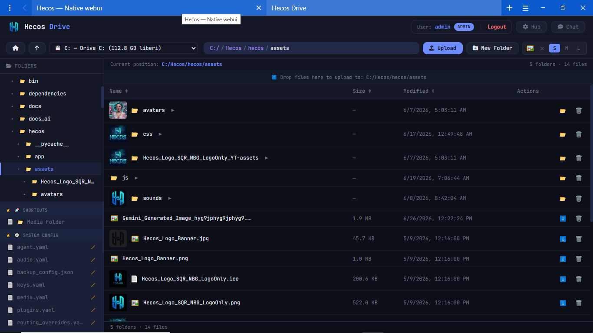
Need to tweak a config file or a python script on the go? Open it in Drive's built-in syntax-highlighting editor, modify the code, and save it directly to the host machine.
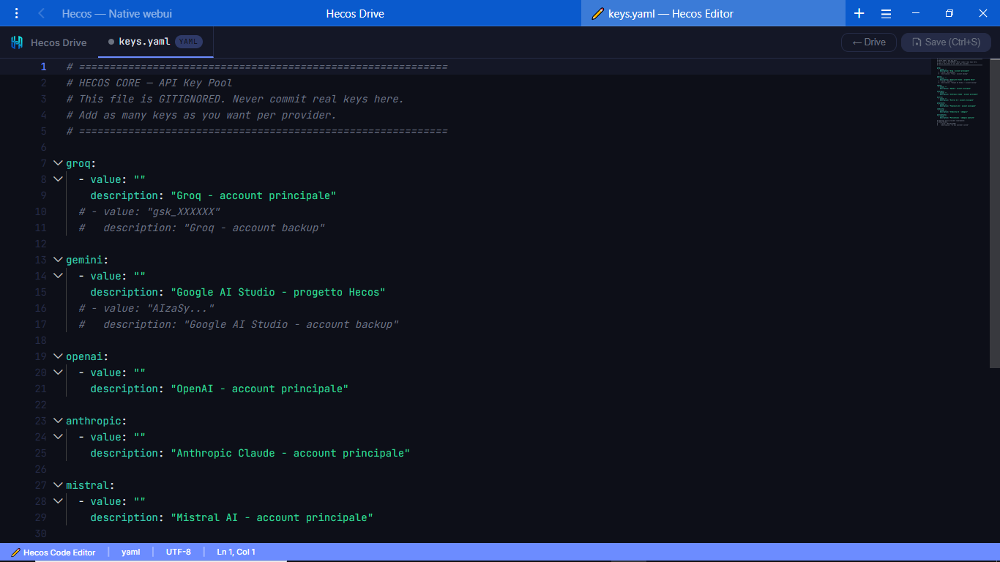